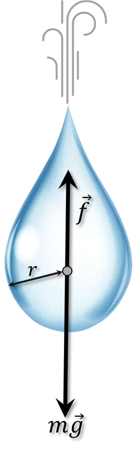

Условие:
\(2.1.38.\) Сила сопротивления воздуха, действующая на капли тумана, пропорциональна произведению радиуса на скорость: $f = γrv$. Капли радиуса $r = 0.1 \,мм$, падая с большой высоты, у земли имеют скорость около $1 \,м/с$. Какую скорость будут иметь капли, радиус которых в два раза меньше? в десять раз меньше?
Решение:

На падающую каплю действуют две силы: постоянная сила тяжести, ускоряющая движение капли, и сила сопротивления воздуха, замедляющая ее движение и растущая с ростом скорости капли. Сила сопротивления воздуха растет до тех пор, пока она не стапет равной силе тяжести. Дальше прекращается изменение скорости, и падение капель происходит с постоянной скоростью.
Запишем уравнение через длительный промежуток времени:
$\alpha = \frac{4}{3} \frac{ρ \pi g}{γ} $$=\frac{v}{r^2}=10^8 \,\frac{1}{м \cdot с}$
$v(\frac{r}{10}) = \alpha \frac{r^2}{100}=0.01\, м/с$